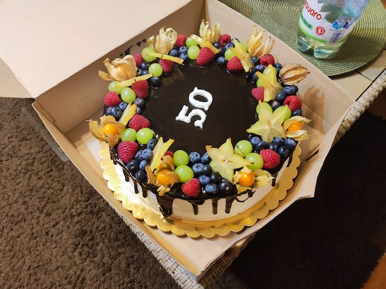

Torta

Description
This cake is very easy to make even for beginners.
Ingredients
For sponge cake
- 10 eggs
- 250g sugar
- 300g flour (smooth)
- 1tbsp oil
- 1tsp baking powder
For cream filling
- 500g mascarpone cheese
- 500g soft cottage cheese
- 500ml heavy cream
- 180g sugar dust
- 500g fresh or frozen fruits
Steps (in Slovak)
Korpus
- Oddelime bielka od zltkov. Do bielok pridame cukor a vyslahame do snehu.
- Vyslahame aj zltka.
- Obe zmiesame dokopy.
- Za staleho miesanie postupne pridavame prepasirovanu muku, prasok do peciva a olej.
- Cesto dame na 180C na 50 minut az hodinu.
Plnka
- Vsetko spolu zmixujeme dotuha.
Torta
- Nakrajame korpus na 4 piskoty.
- Na prvu piskotu dame plnku a posypeme ovocim a dame opat plnku.
- Postup opakujeme kym mame piskoty a ostane nam trocha kremu.
- Zvysok kremu rozotrieme navrh a pobokoch.
- Dozdobime podla seba a nechame odstat v chladnicke cez noc.